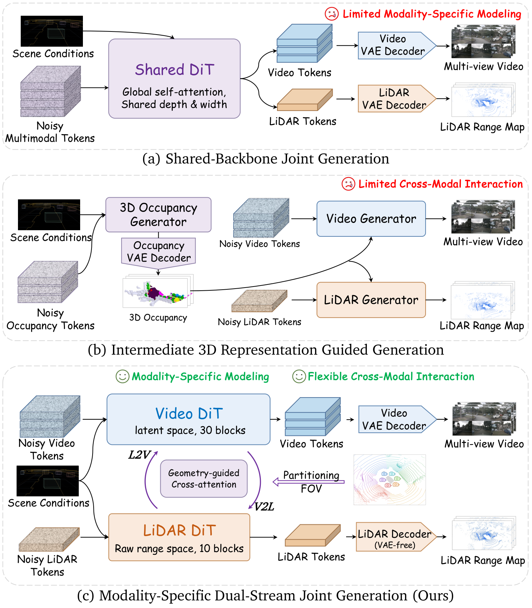
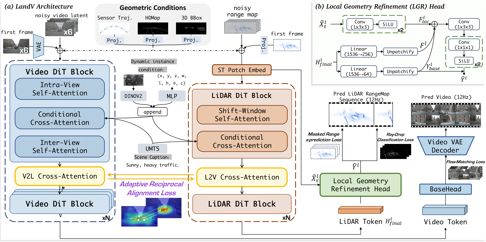

: Multimodal World Modeling for Autonomous Driving via Modality-Aligned Asymmetric Dual-Stream Architecture
Given the first frame, LandV jointly predicts six camera views and a LiDAR scan at each future time step.
scene-0524_208
Ego trajectory
Vehicle insertion
Introduction
LandV pairs a pretrained video diffusion model with a lightweight LiDAR stream that predicts range maps directly.
Geometry-guided cross-attention connects the two streams, and a training loss aligns their attention using 3D object correspondences.

Overview

Video gallery
Explore camera and LiDAR generation on nuScenes.
GT vs. prediction scene-0796_152
One real frame conditions 16 future frames. Six camera views are paired with their LiDAR projections, with ground truth above and LandV below.
Quantitative results
Generation quality, cross-modal geometry, and object consistency on nuScenes.
Table 1 Generation quality on nuScenes
| Modality | Method | Video quality | LiDAR quality | Cross-modal quality | |||
|---|---|---|---|---|---|---|---|
| FID ↓ | FVD ↓ | MMD ↓ | JSD ↓ | Global ↑ | Object ↑ | ||
| Video | MagicDrive-V2 | 22.50 | 92.81 | – | – | – | – |
| DiST-T | 14.79 | 40.73 | – | – | – | – | |
| DriveDreamer-2 | 11.91 | 71.22 | – | – | – | – | |
| OmniNWM | 16.25 | 51.54 | – | – | – | – | |
| Ours (Video-only) | 9.81 | 38.89 | – | – | – | – | |
| LiDAR | RangeLDM | – | – | 0.94 | 0.084 | – | – |
| OpenDWM (DiT3) | – | – | 0.76 | 0.069 | – | – | |
| OpenDWM (MaskGIT) | – | – | 1.36 | 0.119 | – | – | |
| LaGen | – | – | 0.62 | 0.068 | – | – | |
| Ours (LiDAR-only) | – | – | 0.94 | 0.079 | – | – | |
| Multimodal | UniScene | 12.04 | 56.38 | 4.62 | 0.176 | 61.22 | 54.94 |
| UniScene (GT occ) | 13.14 | 74.52 | 3.43 | 0.145 | 64.01 | 61.26 | |
| UniSceneV2† | 24.84 | 111.74 | 2.32 | 0.132 | 28.90 | 31.28 | |
| UniDriveDreamer | 2.81 | 11.44 | 0.27 | 0.039 | – | – | |
| Genesis | 4.24 | 16.95 | – | – | – | – | |
| OmniGen | 21.01 | – | 2.94 | 0.105 | – | – | |
| LandV (Ours) | 7.57 | 30.45 | 0.30 | 0.058 | 75.68 | 70.16 | |
MMD is scaled by 10⁴. Global and Object measure scene- and object-level cross-modal geometric quality. Gray rows show results reported outside the unified protocol. † indicates a different training dataset. DriveDreamer-2 uses RGB conditioning. Bold and underlined values mark the best and second-best unified results.
Table 2 Object consistency on nuScenes
| Method | Cross-view | Cross-time | Joint | Overall |
|---|---|---|---|---|
| MagicDrive-V2 | 42.0 | 72.0 | 54.0 | 56.0 |
| DiST-T | 26.0 | 68.0 | 38.0 | 44.0 |
| DD2 | 70.0 | 82.0 | 74.0 | 75.3 |
| OmniNWM | 14.0 | 72.0 | 38.0 | 41.3 |
| UniScene | 18.0 | 82.0 | 50.0 | 50.0 |
| Ours (Video-only) | 30.0 | 84.0 | 36.0 | 50.0 |
| LandV (Ours) | 66.0 | 86.0 | 82.0 | 78.0 |
Object Consistency Pass Rate (%, higher is better) across camera views, time, and both together (Joint). DD2 denotes DriveDreamer-2. Bold and underlined values mark the best and second-best results.